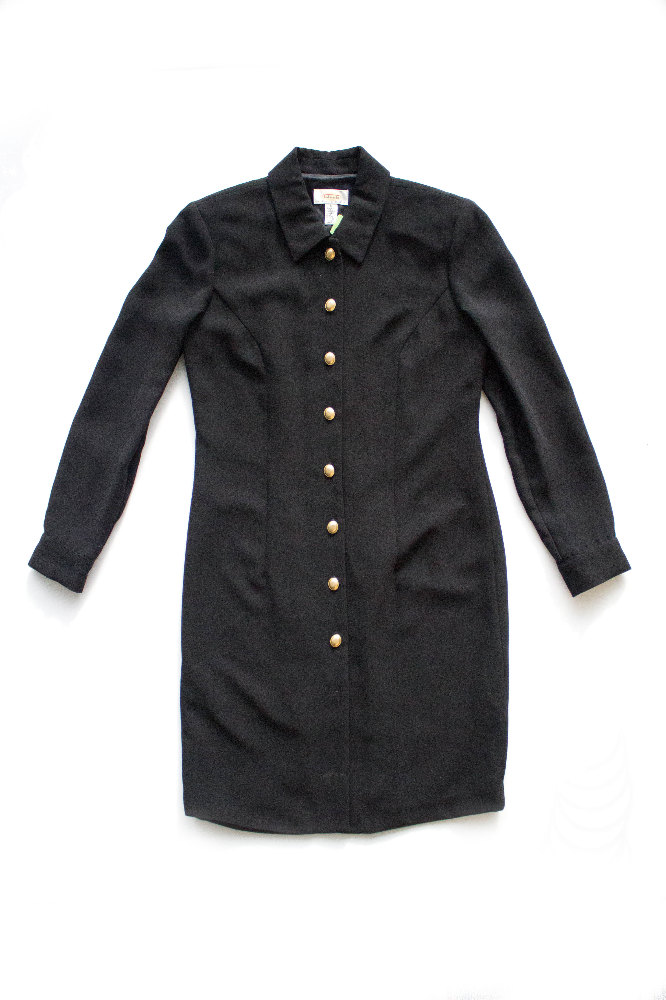

She settles into her chair.
The one she’s sat in for the past 12 years,
In this Massachusetts clothing factory.
Her hands thread the needle
While her mind wanders off.
The first shirt of hundreds lands on her desk.
She sews on button after button,
Eight on each shirt.
The gold button shines on the black cloth.
Yet again her mind wanders off.
Each button is
A story,
A person,
A reason
She has stayed at this job.
The fist button is her son,
The one constant in her life.
He was 1 when she started at the factory,
The only reason she even applied.
Her whole world lives in his eyes.
The second is her sick mother,
Who lives in a hospital bed.
This button signifies the 8th of her pay check
She sends her each week.
The third is education,
Her own
And her sons’.
Her night classes
And his primary school.
The only way up.
The fourth is home,
The small one she can provide.
The place where she rests her head,
Where her son gets to play.
The fifth is food,
Which at times can be hard to provide.
Her son eats before her.
She can go hungry.
His growing body cannot.
The sixth is the American Dream,
The ideal she stills believes in,
The dream she hopes her son can achieve.
The seventh is her,
So close to the end,
The end of her wits,
her energy,
Her patience,
The end of this opportunity.
The eighth button,
The last,
Is this factory
The last of its kind
The last clothing plant in the USA
Today is its’ closing day.
She sews on the last button
On the last shirt,
The last little gold speckle,
She’ll ever attach.
She thinks about her
Fellow seamstresses
In lands far away
Who will still get to sew day after day
Until robots take it all away.